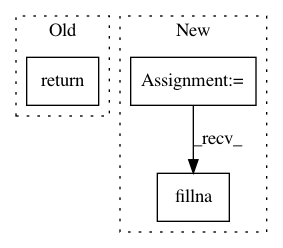

699cb4d8ab7365b3a20ddd3de56a2a0ecc8b0046,skgenome/tabio/gff.py,,read_gff,#,26
Before Change
"str", "str", "str", "str"]
dframe = pd.read_table(infile, comment="//", header=None, na_filter=False,
names=colnames, dtype=dict(zip(colnames, coltypes)))
return (dframe
.assign(start=dframe.start - 1,
score=dframe.score.replace(".", "nan").astype("float"),
gene=dframe.attribute.apply(_parse_name))
.sort_values(["chromosome", "start", "end"])
.reset_index(drop=True))
def _parse_name(text, default="-"):
Extract name from the "attributes" field, if present.
After Change
else:
// Default to a set of likely relevant tags
rx = re.compile(r"(Name|gene_id|gene_name|gene)[= ]"?(\S+?)"?(;|$)")
matches = dframe["attribute"].str.extractall(rx)
if len(matches):
dframe["gene"] = matches.xs(0, level=1)[1]
if "gene" in dframe.columns:
dframe["gene"] = dframe["gene"].fillna("-").astype("str")
else:
dframe["gene"] = ["-"] * len(dframe)
return dframe
In pattern: SUPERPATTERN
Frequency: 3
Non-data size: 3
Instances
Project Name: etal/cnvkit
Commit Name: 699cb4d8ab7365b3a20ddd3de56a2a0ecc8b0046
Time: 2018-02-14
Author: eric.talevich@gmail.com
File Name: skgenome/tabio/gff.py
Class Name:
Method Name: read_gff
Project Name: aertslab/pySCENIC
Commit Name: 119b63f218edec8f3fecee295fbe3462f5c32ee7
Time: 2018-04-05
Author: vandesande.bram@gmail.com
File Name: src/pyscenic/rnkdb.py
Class Name: InvertedRankingDatabase
Method Name: load
Project Name: nilmtk/nilmtk
Commit Name: 2c16357cf3b2a5b1265caf7d89703ef253e39df3
Time: 2014-01-07
Author: jack-list@xlk.org.uk
File Name: nilmtk/stats/electricity/single.py
Class Name:
Method Name: missing_samples_per_period